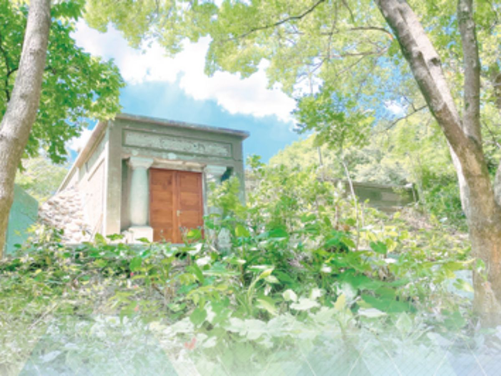
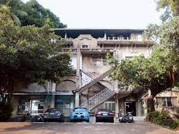

文化資產巡禮
台水公司文化資產
一睹資產風采

瑞穗配水池
(新北市中和區國光街37-59號)
(新北市中和區國光街37-59號)
古蹟包含瑞穗配水池及山本氏紀念碑。瑞穗配水池為一矩形建築，屋頂覆土，上部設置通氣管，平面為單一水池形態，入口處附牆對柱仿托斯坎柱式（Tuscan
order），正立面有「蟲跡飾」，係模擬昆蟲留下之圖案；山本氏紀念碑基座為仿文藝復興時期的毛石砌，使用大塊磚石疊砌，石塊邊緣斜削45度，中間磨平刻字，紀念碑體為陽面僅刻有「紀念碑」三字，碑體立於基座上。

水源地上水塔
(雙十路二段2之1號)
(雙十路二段2之1號)
水源地上水塔高約11.5公尺，原立面構造可分為底部25根鐵筋混凝土柱，形成四開間之高大拱廊，以及上部鐵筋混凝土造之貯水槽，頂部則作有通氣閥與梯間。裝飾上，原以門廊、樓梯、廊道、屋頂山牆增添立面層次變化，並以混凝土線版、柱頭、托樑等稍作裝飾。後期因改作辦公室而將底部拱廊以砌磚封閉。

不老泉
(彰化縣彰化市公園路二段1號)
(彰化縣彰化市公園路二段1號)
不老泉興建於西元1913年（大正2年），當時正值日本人引進西方建築立面形式做為公共建設之年代，建築細部之山牆、柱頭與拱形門窗均採用巴洛克式建築風格進行裝飾。
彰化不老泉為彰化市最早之自來水水源地淨水池，其結構頗佳、造形優美、環境良好，該設施和建築為彰化市飲用水邁向現代化的表徵，就彰化市開始向現代都市化的角度觀之，其歷史性意義值得肯定，另就建築史亦具特殊性，營造工法和創意也頗可取，且本建築保持完整亦與居民之生活息息相關，殊為難得。

嘉義水源地水錶室
(嘉義市東區民權路2號)
(嘉義市東區民權路2號)
「水源地水錶室」為鋼筋混凝土造建築，樓層數為單層，座向採坐南朝北向。「水源地水錶室」前側緊鄰人行道與道路，外觀為西洋歷史式樣，建築平面近似正方形。外牆分成臺基、牆身、山牆三段，以灰泥粉刷裝修，牆身牆面以水平線條裝飾。建築物北側為正立面，入口為圓拱型，圓拱中央鑲嵌拱心石裝飾，兩側附壁柱為多立克柱式。入口門扇為鐵門，上方有半圓型木作通氣窗。建築物東、西兩側各開一窗，窗框為木作，窗戶上方鑲嵌拱心石裝飾
。

打狗水道淨水池
(高雄市鼓山區鼓山一路53巷31之1號)
(高雄市鼓山區鼓山一路53巷31之1號)
打狗水道淨水池亦即壽山配水池，大正2年(1913)10月完工啟用，乃打狗上水道(自來水)系統中，肩負儲存和供給潔淨用水的調節功能，亦即接收儲存來自小坪頂水源地的淨水，並以地形位差供給住民淨水，給水區域包括旗後街、哨船頭、苓雅寮、新濱街、湊町、山下町，後來隨著高雄市人口增加而階段性提高給水能力，整體供水範圍涵蓋高雄川(愛河)以西的街區。主要供水區域為打狗港區，供水人口四萬人，每日最大供水量6,560立方公尺。
深溝水源地
(宜蘭縣員山鄉員山路二段236號)
(宜蘭縣員山鄉員山路二段236號)
深溝水源地興建於西元1931年（昭和6年），為蘭陽地區現代化民生用水之公共建設與服務體系之一環。深溝淨水場是宜蘭面積最大的淨水場，佔地近20公頃。其中人工設備(自來水處理區)僅佔園區面積之十分之一；其餘土地多為水源涵養之原始林地，是全台灣唯一利用濕地淨水的淨水場。
面積約1頃之自來水處理區，經過第二次世界大戰及歷次擴建，而有今日的規模。硬體設施有：五口水井、一座慢濾池、二座清水池、沉澱池、快濾池、加藥室、管理大樓、簡報室、文史館等。日治時期保留至今的原始淨水井，反映蘭陽平原地下水及湧泉帶的水態環境與地質特徵。面積約18公頃的原始涵養林區未經人為破壞，為蘭陽平原僅存的原始林地，表現蘭陽平原最原始的生態樣貌。此外，大量日治時期供水管路及水井，自淨水場延伸、散佈於蘭陽平原各地。深溝水源地之歷史人文及自然生態，不但是標註早期大宜蘭民生用水公共建設及服務體系的重要文化資產，見證蘭陽地區自來水開發史，更是大宜蘭現代化歷程之重要地標，表彰人與環境的共生智慧。